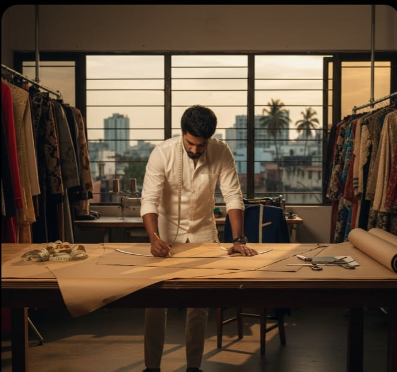
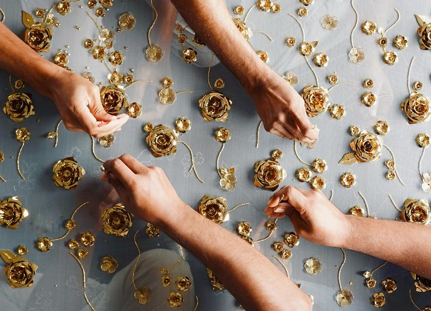
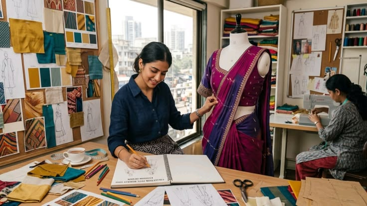
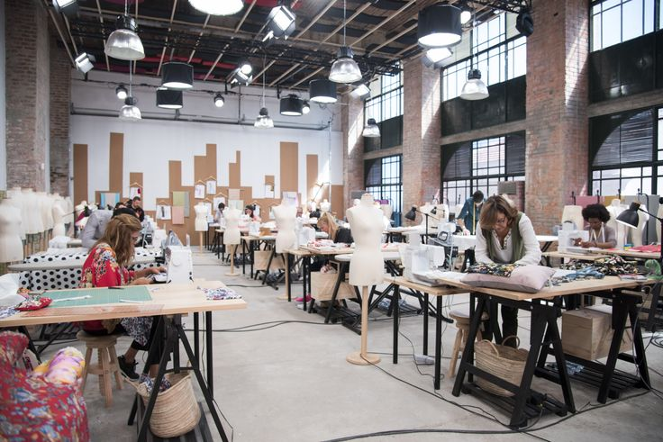

Founder & Master Drafter
Master R. Devanathan
30+ years bespoke bridal and geometric pattern drafting lineage.
Anatomical body contouring, ease calculations, and heirloom bespoke construction.

Hand-cut along true fabric grainlines with forged shears to prevent post-wash distortion.
Every couture piece undergoes test calico draping on dress forms before cutting fine silks.
Continued studio access, boutique startup advisory, and faculty pattern consultations.
Active bridal couturiers, bespoke suiting pattern masters, and industrial technicians.

30+ years bespoke bridal and geometric pattern drafting lineage.

Haute couture specialist in 3D draping and structured eveningwear.
Master of industrial high-speed lockstitch and heirloom surface craft.
Equipped to exact commercial boutique standards.

Visit our training atelier and receive personal guidance on your fashion path.